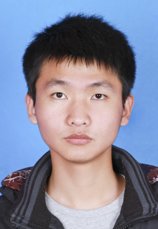

Wu HuikuanPostgraduate Student
24 Zhaojun Road, |
 |
I am a postgraduate student in State Key Laboratory of Reproductive Regulation & Breeding of Grassland Livestock, Inner Mongolia University, China, under the supervision of Prof. Xia Wu.
During my postgraduate study, I was mainly engaged in research on mammalian induced pluripotent stem cells（iPSCs）, and improved the efficiency of mouse somatic cell reprogramming by optimizing the four-factor method and chemical method.
|
|
Optimization Research of Small Molecule Induced Mouse Somatic Cell Reprogramming Technology The first author, Master Dissertation. |